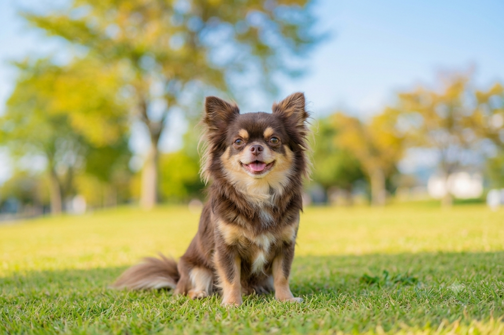
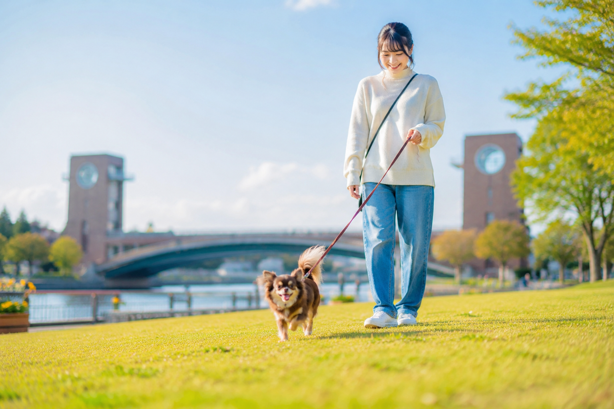
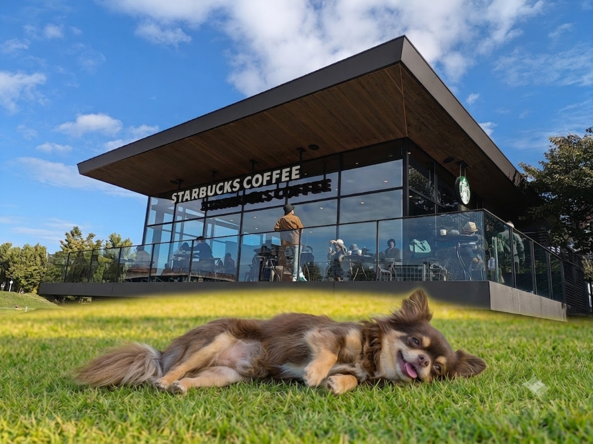
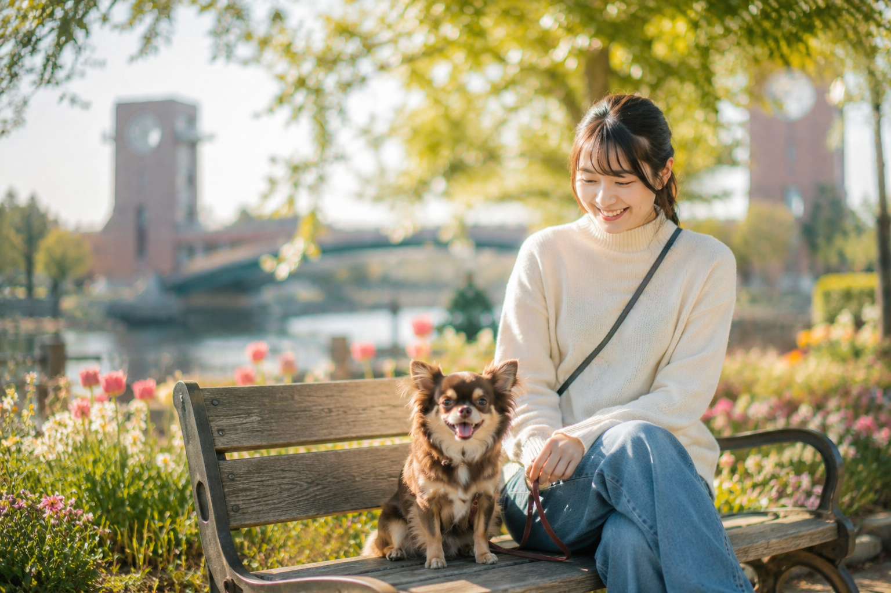

毎日を笑顔にする相棒

私にとって何よりも大切な時間です。 一緒に散歩へ出かけたり、 公園で遊んだり、 家でのんびり過ごしたりするだけで 心が癒されます。 元気いっぱいの笑顔やしぐさを見るたびに、 毎日がもっと楽しく、 幸せな気持ちになります。 愛犬は私にとって かけがえのない家族です。
一緒にいるだけで 心が癒されます。
散歩をしながら 季節の景色を楽しめます。
たくさんの元気を もらえます。



愛犬との時間は、 何気ない毎日を 特別な思い出に変えてくれます。 これからも一緒に いろいろな場所へ出かけ、 たくさんの思い出を作りながら、 笑顔あふれる毎日を 過ごしていきたいと思います。